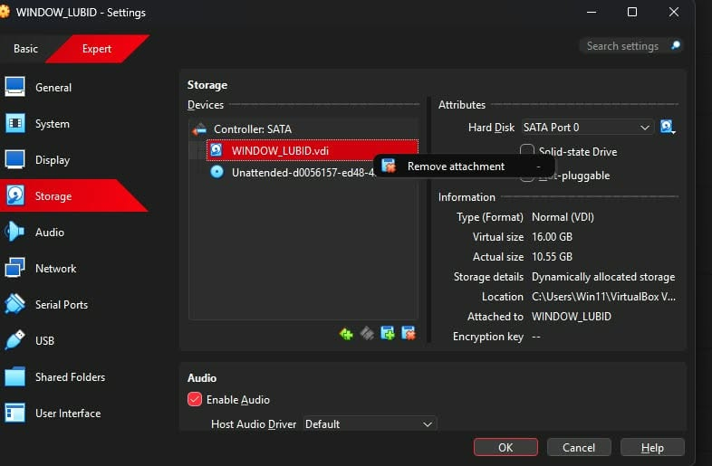
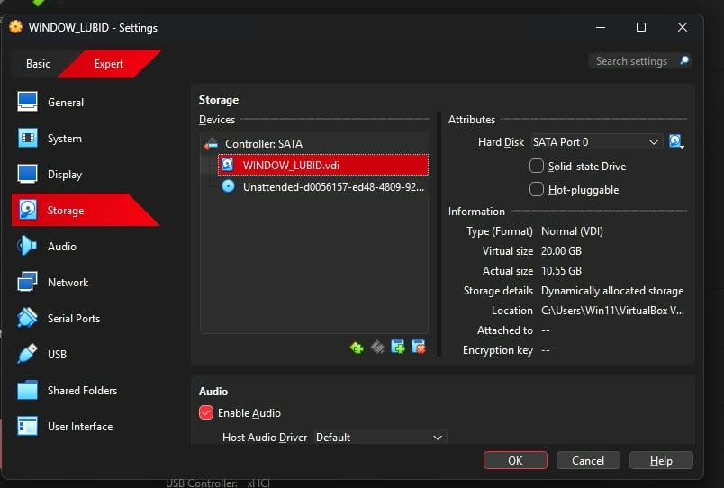
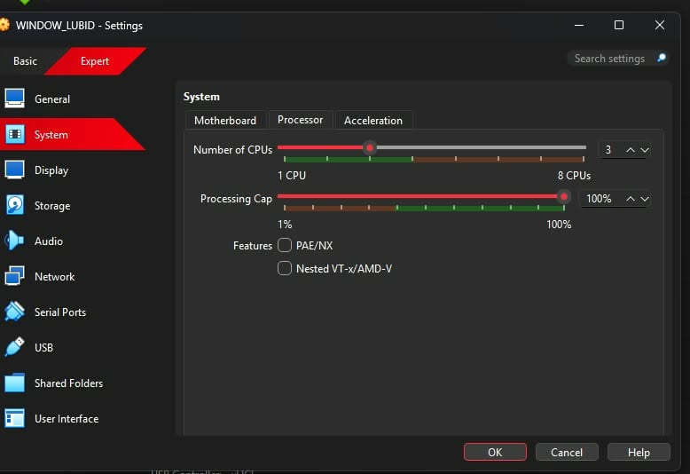
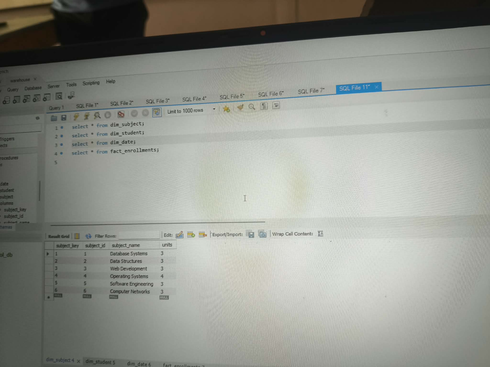
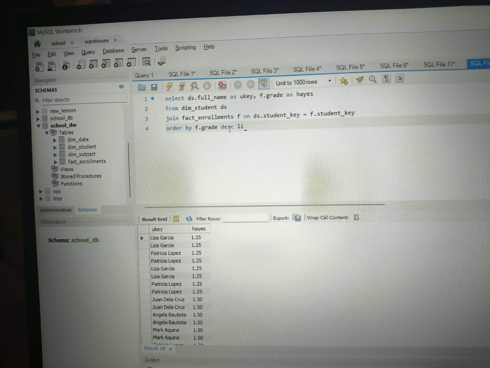
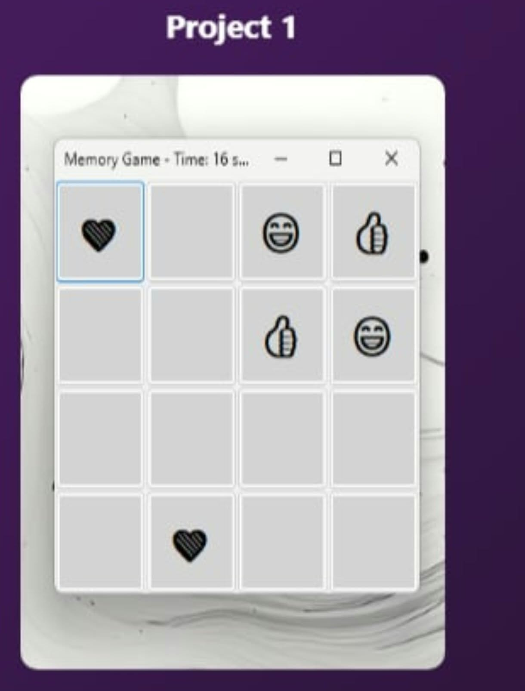

Installing OS
This very site — built from scratch with HTML, CSS, and vanilla JavaScript. A small experiment in editorial + terminal aesthetics.
Hi, I'm Glenn Harvey Lubid — a computer science student who believes that every error is a lesson, and every solution is a small victory.
“Every error is a lesson, and every solution is an achievement.”
I'm currently in my third year of BS Computer Science at Cavite State University – Bacoor City Campus. I like working through problems that don't have obvious answers, and I try to build things that are as useful as they are simple.
BS Computer Science, CvSU Bacoor
HTML · CSS · JavaScript · SQL · Problem Solving
Cooking · Singing · Dancing · Watching Series of all Genres

This very site — built from scratch with HTML, CSS, and vanilla JavaScript. A small experiment in editorial + terminal aesthetics.

This very site — built from scratch with HTML, CSS, and vanilla JavaScript. A small experiment in editorial + terminal aesthetics.

This very site — built from scratch with HTML, CSS, and vanilla JavaScript. A small experiment in editorial + terminal aesthetics.

This very site — built from scratch with HTML, CSS, and vanilla JavaScript. A small experiment in editorial + terminal aesthetics.

A simple SQL database project built while learning data modeling — user records, clean queries, and a minimal interface.

A lightweight task manager that stores everything in the browser. Built to practice state management without any framework.
drag, arrow keys, or click to flip through
Even a Problem is a Opportunity I want to take a risk.